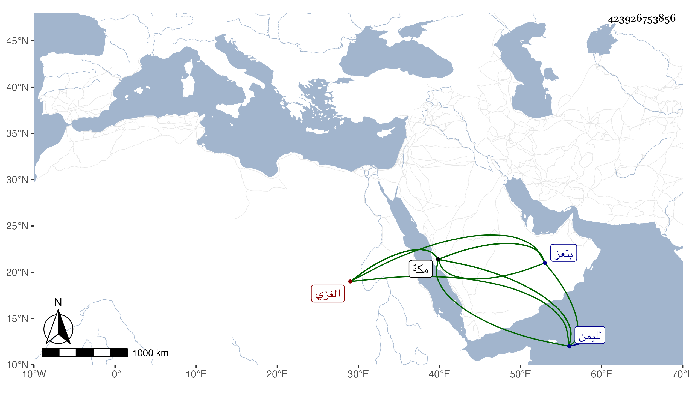

0902Sakhawi.DawLamic.ITO20230111-ara1.EIS1600.423926753856
Biography ID: 423926753856
637
محمد بن سعيد الغزي نزيل مكة ويعرف بالمجرد . كان متعبدا وفيه سماح وكرم نفس وبلغنا ما معناه أنه دخل بلاد العجم وجال فيها نحو أربع عشرة سنة وضاق خاطره بها لكونه لا يعرف لسانهم فتعلمه ونسي كلام العرب وأنه أراد بعد ذلك استعلامهم فما عرف ما قالوا ، وتردد لليمن مرات وصحب بها جماعة صالحين ونال بها برا طائلا إلى أن أدركه الأجل بتعز بعد قدومه إليها من مكة بقليل في جمادى الآخرة سنة ست وعشرين ودفن بمقبرة الأجناد وقد بلغ السبعين أو جازها . ذكره الفاسي في مكة .
